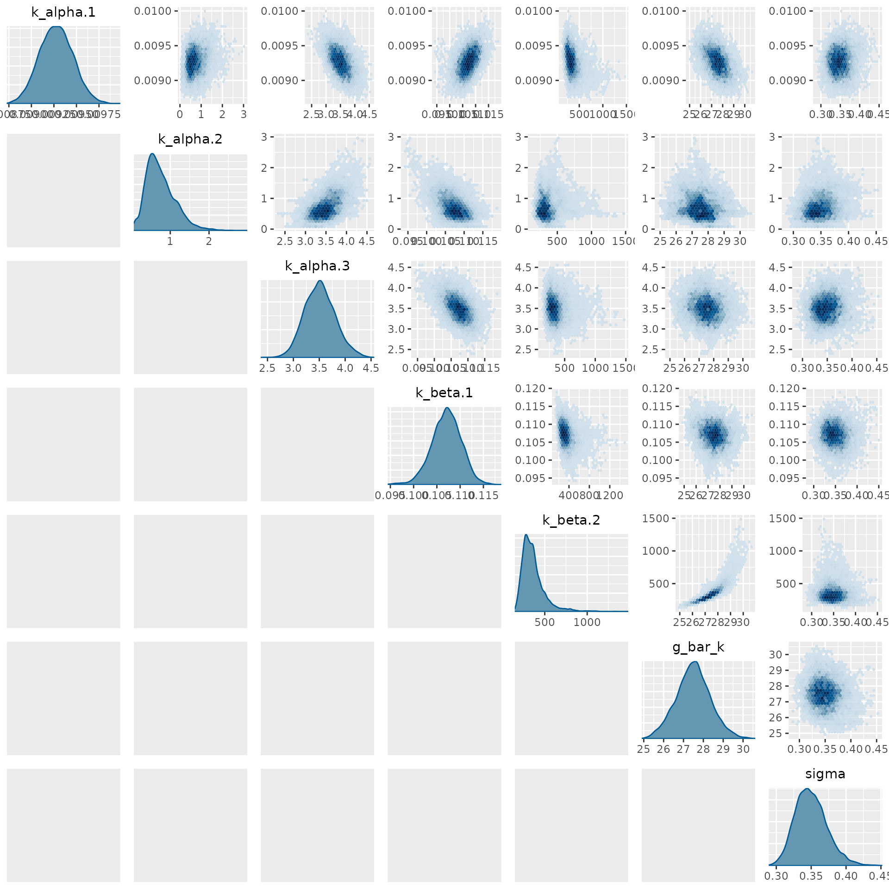

Interfacing with Stan models via BridgeStan
Source:vignettes/articles/interfacing-with-stan-models.Rmd
interfacing-with-stan-models.RmdThe rmcmc package includes support for using the
probabilistic programming language Stan to define the target
distribution for inference via the R
interface of the excellent BridgeStan package. This article
illustrates how to use the Stan modelling syntax to define a model to
use with rmcmc using an example model and data from
computational neuroscience.
Hodgkin-Huxley model for action potential generation
We will use as an example a mathematical model describing how action potentials in neurons are generated and how we might fit that model to data. The model of interest was described by Hodgkin and Huxley (1952) based on experimental investigations with squid giant axons. They received the Nobel Prize in Physiology or Medicine for their work in 1963. We will fit the model here to a digitisation of the data the original experiments from Daly et al. (2015).
The cell membrane voltage is modelled as being controlled by voltage-gated ion channels, with governing ordinary differential equation (ODE)
where
- is the membrane capacitance per unit area,
- is the potassium channel conductance,
- the potassium channel reversal potential,
- is the sodium channel conductance,
- is the sodium channel reversal potential,
- is the leakage conductance,
- is the leakage reversal potential,
- and is the membrane current per unit area.
Importantly the potassium and sodium channel conductances, and , are themselves time and voltage dependent variables. In Hodgkin and Huxley’s experiments they used an ingenious experimental protocol to allow measuring the evolution of the cell membrane’s conductance over time for specific ion channels while clamped to a specific depolarization voltage. By varying the extracellular ion concentrations, they were able to isolate the effects of the potassium and sodium channels. Here we will concentrate on the model and data specifically for , the potassium channel conductance.
The potassium channel conductance is modelled as
where
- is the maximum potassium channel conductance,
- is a time and voltage dependent subunit activation probability in ,
- is the depolarization from the resting potential in mV
- and are a set of model parameters.
The potassium channel subunit activation is governed by a linear ODE
which has the analytic solution
The time constant and equilibrium value are defined respectively in terms of rate constant functions and as
The rate constants and are themselves defined respectively in terms of the model parameters as
Together these equations define a mathematical model for how the potassium conductance varies as a function of the applied depolarization and time, with six unknown model parameters that need to be inferred from the experimental data. In Hodgkin and Huxley’s experiments, the potassium conductances were measured at regular time intervals for a series of applied depolarizations. We assume here that the recorded conductances are subject to independent zero-mean Gaussian noise with an unknown standard deviation , that is
where and are the pairs of measurement times and applied depolarization voltages for the measured potassium conductance .
Altogether then we have seven parameters to infer. All parameters here are constrained to be non-negative. We assume that they are apriori independent with weakly-informative log normal prior distributions that correspond to beliefs about the typical plausible magnitudes of these parameters:
Stan implementation
Stan’s high-level modelling syntax makes it easy to translate the above mathematical model to an efficient numerical implementation. Importantly for our purposes, due to Stan’s support for algorithmic differentiation, we will be able to automatically compute derivatives for the resulting model functions.
We first declare a series of user-defined
functions in the functions block of a Stan model file,
corresponding to the various functions defined symbolically in the
previous section.
functions {
vector alpha_k(vector v, vector k_alpha) {
return k_alpha[1] .* (v + k_alpha[2])
./ (exp((v + k_alpha[2]) ./ k_alpha[3]) - 1);
}
vector beta_k(vector v, vector k_beta) {
return k_beta[1] .* exp(v ./ k_beta[2]);
}
vector n_infty(vector v, vector k_alpha, vector k_beta) {
return alpha_k(v, k_alpha) ./ (alpha_k(v, k_alpha) + beta_k(v, k_beta));
}
vector tau_n(vector v, vector k_alpha, vector k_beta) {
return 1 ./ (alpha_k(v, k_alpha) + beta_k(v, k_beta));
}
vector potassium_channel_subunit_activation(
vector t, vector v, vector k_alpha, vector k_beta
) {
real n_0 = n_infty([0.0]', k_alpha, k_beta)[1]; // Assume starting from equilibrium
return n_0
+ (n_infty(v, k_alpha, k_beta) - n_0)
.* (1 - exp(-t ./ tau_n(v, k_alpha, k_beta)));
}
vector potassium_conductance(
vector t, vector v, real g_bar_k, vector k_alpha, vector k_beta, int N
) {
vector[N] n = potassium_channel_subunit_activation(t, v, k_alpha, k_beta);
return g_bar_k .* n .^ 4;
}
}In the
data block we declare the names, types and dimensions
of the data values that will be read from the passed data file. Here the
data consists of three one-dimensional arrays (vectors) each of length
,
corresponding to the measurement times (times, unit
ms), depolarizations applied to the axons
(depolarizations, unit mV) and measured
conductances (conductances, unit mS cm^{-1}).
data {
int<lower=1> N;
vector[N] times;
vector[N] depolarizations;
vector[N] conductances;
}In the
parameter block we declare the name, types, dimensions
and any constraints on the model parameters that we will be inferring.
Here the rate constant parameters
and
are declared as vectors of dimension 3 and 2 respectively. All
parameters here are non-negative and so a lower=0
constraint is added to indicate to Stan to transform
these constrained parameters to an unconstrained representation suitable
for sampling.
parameters {
vector<lower=0>[3] k_alpha;
vector<lower=0>[2] k_beta;
real<lower=0> g_bar_k;
real<lower=0> sigma;
}We are now ready to put everything together in the
model block. We first define the log-normal prior
distributions on all the model parameters. We then call the earlier
defined potassium_conductance function to compute the
simulated potassium conductance values given the measurement times and
depolarizations from the data and parameter values. Finally we specify
that the observed conductance values are subject to independent normal
observation noise.
model {
//priors
k_alpha[1] ~ lognormal(-3, 1);
k_alpha[2] ~ lognormal(2, 1);
k_alpha[3] ~ lognormal(2, 1);
k_beta[1] ~ lognormal(-3, 1);
k_beta[2] ~ lognormal(2, 1);
g_bar_k ~ lognormal(2, 1);
sigma ~ lognormal(0, 1);
// Solve model to simulate conductances
vector[N] simulated_conductances = potassium_conductance(
times, depolarizations, g_bar_k, k_alpha, k_beta, N
);
// likelihood
conductances ~ normal(simulated_conductances, sigma);
}Data
The data we will use to fit the model is a from a digitisation of the
experimental data from Hodgkin and Huxley (1952) due to Daly et al. (2015). The data has been written
in JSON format to a file
hodgkin-huxley-potassium-data.json, with contents
{
"N": 136,
"times": [
0.151969, 0.346818, 0.540928, 0.708482, 1.08186 , 1.48128 ,
1.94706 , 2.77638 , 4.08767 , 6.38795 , 8.74094 , 0.143946,
0.351982, 0.546323, 0.727155, 1.08817 , 1.50074 , 1.96633 ,
2.78252 , 4.14563 , 6.41981 , 8.79894 , 0.166009, 0.360627,
0.564685, 0.719812, 1.10767 , 1.51457 , 1.98016 , 2.79612 ,
4.14918 , 6.43957 , 8.78951 , 11.2179 , 0.181155, 0.38587 ,
0.570391, 0.745402, 1.12413 , 1.51208 , 1.9878 , 2.81355 ,
4.15654 , 6.40831 , 8.79632 , 11.2246 , 0.176417, 0.390884,
0.575647, 0.750935, 1.12043 , 1.52861 , 1.99489 , 2.8308 ,
4.17366 , 6.44379 , 8.80331 , 11.2411 , 0.189592, 0.384833,
0.569941, 0.754981, 1.1346 , 1.54314 , 1.99071 , 2.81711 ,
4.16031 , 6.42045 , 8.79916 , 11.2174 , 11.9878 , 0.192635,
0.387599, 0.582563, 0.758058, 1.11856 , 1.53733 , 2.00485 ,
2.8225 , 4.15637 , 6.4459 , 8.81437 , 11.2423 , 12.0029 ,
0.185443, 0.351221, 0.565688, 0.750969, 1.16043 , 1.56976 ,
1.99835 , 2.84581 , 4.18023 , 6.45033 , 8.82848 , 11.2172 ,
11.9973 , 0.187172, 0.362701, 0.567555, 0.77234 , 1.12336 ,
1.5522 , 2.01038 , 2.81901 , 4.17345 , 6.46347 , 8.83215 ,
11.2404 , 12.0104 , 0.189039, 0.345169, 0.579174, 0.774242,
1.12527 , 1.58342 , 2.02211 , 2.84087 , 4.18601 , 6.43774 ,
8.83581 , 11.2438 , 12.0042 , 0.174412, 0.320652, 0.583981,
0.749621, 1.12018 , 1.51018 , 2.00731 , 2.84564 , 4.19074 ,
6.41301 , 8.83059 , 11.2483 , 11.9989
],
"depolarizations": [
-109.0 , -109.0 , -109.0 , -109.0 , -109.0 , -109.0 , -109.0 ,
-109.0 , -109.0 , -109.0 , -109.0 , -100.0 , -100.0 , -100.0 ,
-100.0 , -100.0 , -100.0 , -100.0 , -100.0 , -100.0 , -100.0 ,
-100.0 , -88.0 , -88.0 , -88.0 , -88.0 , -88.0 , -88.0 ,
-88.0 , -88.0 , -88.0 , -88.0 , -88.0 , -88.0 , -76.0 ,
-76.0 , -76.0 , -76.0 , -76.0 , -76.0 , -76.0 , -76.0 ,
-76.0 , -76.0 , -76.0 , -76.0 , -63.0 , -63.0 , -63.0 ,
-63.0 , -63.0 , -63.0 , -63.0 , -63.0 , -63.0 , -63.0 ,
-63.0 , -63.0 , -51.0 , -51.0 , -51.0 , -51.0 , -51.0 ,
-51.0 , -51.0 , -51.0 , -51.0 , -51.0 , -51.0 , -51.0 ,
-51.0 , -38.0 , -38.0 , -38.0 , -38.0 , -38.0 , -38.0 ,
-38.0 , -38.0 , -38.0 , -38.0 , -38.0 , -38.0 , -38.0 ,
-32.0 , -32.0 , -32.0 , -32.0 , -32.0 , -32.0 , -32.0 ,
-32.0 , -32.0 , -32.0 , -32.0 , -32.0 , -32.0 , -26.0 ,
-26.0 , -26.0 , -26.0 , -26.0 , -26.0 , -26.0 , -26.0 ,
-26.0 , -26.0 , -26.0 , -26.0 , -26.0 , -19.0 , -19.0 ,
-19.0 , -19.0 , -19.0 , -19.0 , -19.0 , -19.0 , -19.0 ,
-19.0 , -19.0 , -19.0 , -19.0 , -10.01, -10.01, -10.01,
-10.01, -10.01, -10.01, -10.01, -10.01, -10.01, -10.01,
-10.01, -10.01, -10.01
],
"conductances": [
0.26035 , 0.469177, 1.50235 , 3.15343 , 7.28047 , 11.3564 ,
13.939 , 17.0936 , 19.2759 , 20.5448 , 21.0415 , 0.7394 ,
0.742386, 1.5346 , 2.90553 , 6.38418 , 10.3899 , 13.2385 ,
16.6184 , 19.0589 , 20.4598 , 20.8098 , 0.25768 , 0.719578,
1.526 , 2.52307 , 4.97748 , 7.9296 , 10.6912 , 14.223 ,
16.9205 , 18.3299 , 18.5922 , 18.3581 , 0.196537, 0.276938,
1.13222 , 1.71605 , 3.50426 , 5.87397 , 8.24492 , 11.7835 ,
14.8643 , 15.865 , 17.1777 , 17.0957 , 0.514338, 0.596152,
1.18937 , 1.46748 , 2.6933 , 4.27401 , 6.32801 , 9.45034 ,
12.7374 , 15.0535 , 15.5203 , 15.6734 , 0.72418 , 0.499035,
0.691458, 0.959828, 1.72454 , 2.86938 , 3.97679 , 6.72229 ,
9.5129 , 12.0124 , 12.8047 , 13.0659 , 13.0006 , 0.342299,
0.420447, 0.498595, 0.538739, 0.883313, 1.49284 , 2.10304 ,
3.73692 , 6.05714 , 8.39047 , 9.70601 , 10.0035 , 10.0517 ,
0.394772, 0.397135, 0.478621, 0.481263, 0.604742, 0.885073,
1.44017 , 2.51102 , 4.29465 , 6.64062 , 8.08621 , 8.59084 ,
8.68039 , 0.482695, 0.485248, 0.408227, 0.411206, 0.456312,
0.742553, 0.90922 , 1.80099 , 3.02071 , 4.93404 , 6.08851 ,
6.64355 , 7.05475 , 0.410034, 0.301024, 0.341214, 0.306803,
0.348568, 0.539926, 0.693985, 1.11242 , 1.76018 , 2.75348 ,
3.67468 , 4.37379 , 4.71736 , 0.243338, 0.253563, 0.244784,
0.284204, 0.285513, 0.306307, 0.366316, 0.456655, 0.636163,
0.954693, 1.19624 , 1.38924 , 1.47927
]
}Using the rjson and ggplot2 package we can
visualize this conductance data.
We first read the data from the JSON file in to a data frame.
data <- data.frame(fromJSON(file = "hodgkin-huxley-potassium-data.json"))We then plot the conductances against measurement times, grouping by the depolarization level with a different colour for each level.
ggplot(
data = data, aes(x = times, y = conductances, colour = factor(depolarizations))
) +
geom_line() +
geom_point() +
labs(
x = "Times / ms", y = "Conductances / mS cm-2", colour = "Depolarizations / mV"
)
Fitting model with rmcmc
We are now ready to sample from the model’s posterior distribution
using rmcmc. We will use BridgeStan to construct a
StanModel object from the files defining the Stan model and
data.
library(bridgestan)Before creating the model object, we set a fixed random seed and use it to seed the global R random number generator state. We will also use this seed for the (separate) random number generator state used by BridgeStan.
seed <- 7861223L
set.seed(seed)We now create our model object, passing the paths to the Stan model file and JSON data file respectively, as well as our integer seed for the internal Stan random number generator state.
model <- StanModel$new(
"hodgkin-huxley-potassium-model.stan",
"hodgkin-huxley-potassium-data.json",
seed
)rmcmc requires the initial chain state to be explicitly
specified. The StanModel object we just created includes a
method param_unc_num which can be used to evaluate the
dimension of the unconstrained model parameter space we will perform
inference in. Here we use the arbitrary choice of initializing with
random uniform values on (0, 1) in the unconstrained space.
initial_state <- runif(model$param_unc_num())We now have all the components we need to sample a chain using
rmcmc. The sample_chain() function is the main
entry point to rmcmc. It takes several arguments, one of
the most important of which is the target_distribution
specifying the distribution to generate approximate samples for. This
can be supplied in various formats; here we will exploit the ability to
pass a BridgeStan StanModel instance directly, with this
internally be mapped through the
target_distribution_from_stan_model() function. This
function can be called explicitly for additional control, for example
customizing whether values defined in the Stan generated quantities or
transformed parameters blocks are included in the traced chain
outputs.
We also pass our sampled initial state and specify to use 100000 iterations for both the initial adaptive warm-up and main (non-adaptive) sampling stages. A chain of this length takes around a minute to sample on a laptop. Finally we here explicitly specify the adaptation scheme used to learn the proposal scale and shape parameters. This overrides the default choice of using a dense shape matrix based on the estimated covariances, to instead use a diagonal shape matrix based on just the estimated variances. This was found to give robuster sampling in practice here.
results <- sample_chain(
target_distribution = model,
initial_state = initial_state,
n_warm_up_iteration = 100000,
n_main_iteration = 100000,
adapters = list(scale_adapter(), shape_adapter("variance"))
)Checking results with posterior
We can use the posterior package to compute summary
statistics and convergence diagnostics for the sampled chain.
library(posterior)
#> This is posterior version 1.6.1
#>
#> Attaching package: 'posterior'
#> The following objects are masked from 'package:stats':
#>
#> mad, sd, var
#> The following objects are masked from 'package:base':
#>
#> %in%, matchWhile the results$traces matrix (with rows corresponding
to the chain iterations and column the traced variables) can be passed
directly to main of the functions in the posterior package,
here we will explicitly create a draws object to allow using some of the
functions for subsetting the draws.
draws <- as_draws(results$traces)We first compute and display a series of convergence diagnostics,
using the subset_draws function in posterior to filter only
the traced variables corresponding to the model parameters (accessed
using the model$param_names() method):
summarize_draws(
subset_draws(draws, model$param_names()), default_convergence_measures()
)
#> # A tibble: 7 × 4
#> variable rhat ess_bulk ess_tail
#> <chr> <dbl> <dbl> <dbl>
#> 1 k_alpha.1 1.01 187. 498.
#> 2 k_alpha.2 1.01 52.7 88.7
#> 3 k_alpha.3 1.01 164. 386.
#> 4 k_beta.1 1.00 163. 255.
#> 5 k_beta.2 1.01 34.6 81.4
#> 6 g_bar_k 1.02 40.6 87.5
#> 7 sigma 1.01 231. 583.The rank-normalized values are all close to 1 which is indicative of the chain having converged, though note as we have only sampled a single chain here the power of this diagnostic is limited. The effective sample size (ESS) estimates for both the bulk and tail are on the low side, but suggest we should be able to compute reasonably informative posterior estimates.
We can also compute summary statistics for the posterior distribution on the model parameters:
summarize_draws(subset_draws(draws, model$param_names()), default_summary_measures())
#> # A tibble: 7 × 7
#> variable mean median sd mad q5 q95
#> <chr> <dbl> <dbl> <dbl> <dbl> <dbl> <dbl>
#> 1 k_alpha.1 0.00928 0.00927 0.000184 0.000189 0.00898 0.00958
#> 2 k_alpha.2 0.756 0.687 0.379 0.344 0.268 1.45
#> 3 k_alpha.3 3.51 3.51 0.297 0.296 3.04 4.02
#> 4 k_beta.1 0.107 0.107 0.00319 0.00308 0.102 0.112
#> 5 k_beta.2 362. 334. 138. 101. 208. 618.
#> 6 g_bar_k 27.5 27.5 0.858 0.831 26.1 28.9
#> 7 sigma 0.350 0.348 0.0228 0.0225 0.316 0.390Visualising posterior with bayesplot
As well as being able to compute diagnostics and statistics using the
posterior package, the sampled chain can also be visualized
using the bayesplot package.
library(bayesplot)
#> This is bayesplot version 1.14.0
#> - Online documentation and vignettes at mc-stan.org/bayesplot
#> - bayesplot theme set to bayesplot::theme_default()
#> * Does _not_ affect other ggplot2 plots
#> * See ?bayesplot_theme_set for details on theme setting
#>
#> Attaching package: 'bayesplot'
#> The following object is masked from 'package:posterior':
#>
#> rhatFor example, we can plot a pair plot of the univariate and bivariate marginal posterior distributions on the parameters as follows:
mcmc_pairs(
thin_draws(subset_draws(draws, model$param_names()), 10),
diag_fun = "dens",
off_diag_fun = "hex"
)
#> Warning: Only one chain in 'x'. This plot is more useful with multiple chains.
Here we use the thin_draws function from the
posterior package to thin the draws by a factor of 10 to
reduce the number of points needing to be binned in the plots. This
reduces the time required to produce to plot while having minimal effect
on the variances of the plotted densities.